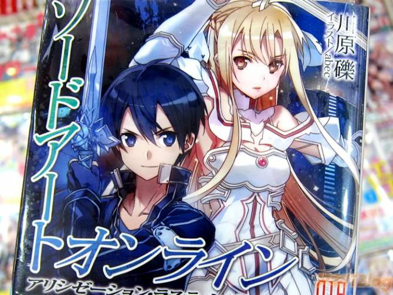
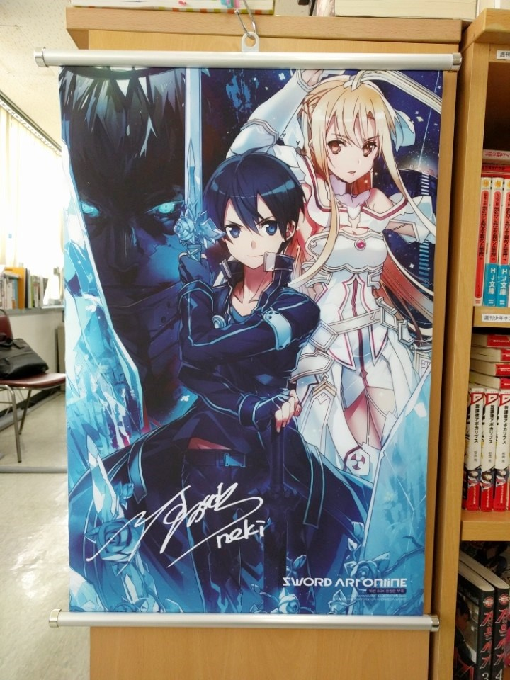

카테고리 > 소드 아트 온라인 > 최근 포스팅
소드 아트 온라인 18권 한국 상륙! 예약구매 진행 중

소드 아트 온라인 18권이 드디어 한국 상륙!!
소드 아트 온라인 18권이 드디어 한국에 상륙합니다!10월 말 출시가 확정되었으며 다양한 서점에서 온라인 구매 예약을 할 수 있습니다.
또한 3만원 상당의 한정판을 구매하면 태피스트리를 포함한 다양한 상품도 함께 포함되어 있다고 합니다!

이번 18권에서 드디어 앨리시제이션 스토리의 끝을 볼 수 있다고 합니다.
몇 권동안 눈을 감고 있었던 먼치킨 주인공 키리토도 눈을 뜬다고 하네요!
또한 아스나, 리파, 시논 등등 다양한 캐릭터가 참전!!
참으로 기대되는 18권입니다!
같은 작가가 쓴 액셀 월드 포스팅 보러 가기